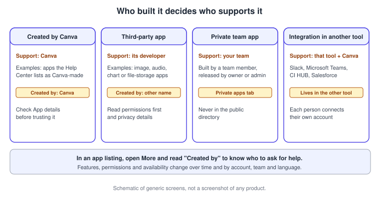
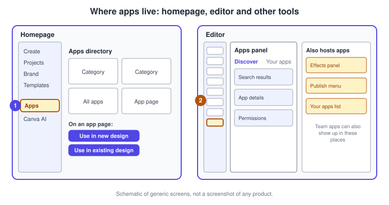
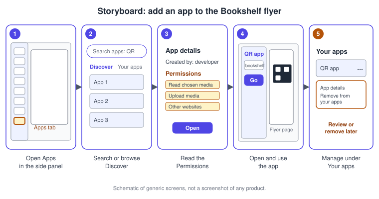
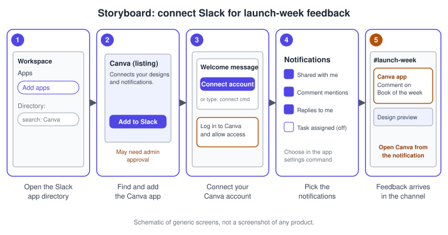
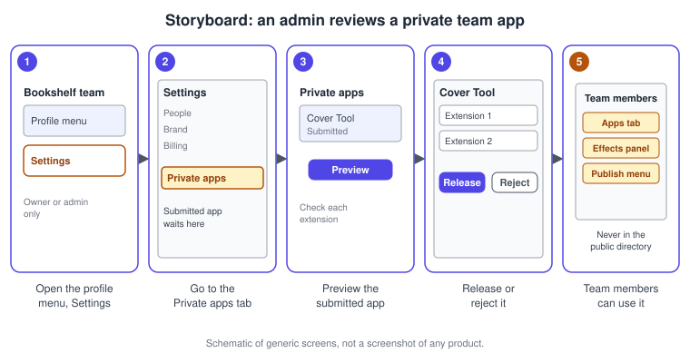

Apps Marketplace and Integrations
|
This content was generated with the assistance of AI and should be verified against the official documentation before being relied on in production. |
This page was checked against the official Canva Help Center, the Apps Marketplace page and the Canva Developers documentation on 2026-11-07. It covers Canva apps: small extensions that run inside the Canva editor or homepage and add tools, content libraries, effects, publishing destinations and connections to other services, together with the integrations that put Canva inside other work tools. Browsing the marketplace and connecting an app is part of the standard Canva experience and the Help Center does not tie it to a single plan; what differs is each app. Some apps are free to use, some draw on a paid Canva plan or on the AI allowance (see Plans, Pricing and AI Allowance), and some need a separate subscription from the third party that built them. Prices are not repeated here; Canva’s are published at https://www.canva.com/pricing/ and every third-party price is on that vendor’s own page. The apps framework is generally available. Individual apps come and go, and the Help Center says that available features, supported integrations, permissions and connection experiences vary between apps and change over time, so treat every app name on this page as an example from the check date and not as a promise.
The running example is Bookshelf, the book catalogue and reading-list app designed in the Figma sub-section. For its launch campaign you will add an app to the print flyer, connect Slack so that reviewers can answer comments without opening email, and, as a team owner, release a small private app for the team.
Apps and integrations at a glance
Four kinds of thing are easy to mix up, and the difference decides who supports them, what they may access and who has to approve them.
-
An app created by Canva is built and supported by Canva. The Help Center gives a quick-reference list of popular examples (it names Magic Media, Mockups, TypeCraft, Flourish and others) and says the list is incomplete and changes.
-
A third-party app is built by another company or individual and listed in the same marketplace. You may have to connect it to your Canva account and accept the developer’s own terms and privacy policy before you can use it.
-
A private team app is built by a member of your team, reviewed by a team owner or admin and available only to that team. It never appears in Canva’s public Apps Directory.
-
An integration in another tool is the other direction: instead of an app in Canva, there is a Canva app in Slack or Microsoft Teams, or a Canva app inside Salesforce, so that designs and notifications reach you where you already work.

Where apps live
There are two entry points. On the homepage, the side menu has an Apps entry that opens the Apps Directory, organised by category with an All apps view; selecting an app opens its page, and the page offers Use in existing design or Use in new design. In the editor, the side panel has an Apps tab with two sub-views: Discover, for new apps, and Your apps, for the ones you have already connected. The Apps tab is also where tabs that are missing from the side panel can be re-added (see Editor Tour). Some apps are not opened from the panel at all: an app can add an extension to the Effects panel or to the Publish menu, and released team apps can be found in the same three places, the Apps tab, the Effects panel or the Publish menu.

On the public marketplace page the apps are grouped in categories. On the check date the English-language names of those categories included audio and voice-over, communication, graphic design, photo editing, text styling, AI generation, file and data management, project management, marketing, and video and animation, and the page highlighted apps from several vendors such as an image-generation service, a data-visualization service and a QR-code generator. The page is localised, so the category names you see depend on your language, and Help Center notes that some apps are only available in English and may show a warning when Canva is set to another language.
Desktop and mobile
The permission articles give separate desktop and mobile instructions, and the paths are the same names, Apps, then Your apps or Discover, then the app’s More menu. Connecting an app does not install anything on your device; the app is loaded from Canva. If you remove an app, close it on every device first, because it can otherwise keep working on a device until you refresh it. Because apps are layered on top of the editor, the controls an app shows can differ between the full editor, the desktop app and the mobile apps; see Desktop, Mobile and Offline for those surfaces.
Permissions: what you are agreeing to
An app can only do what its permissions allow. For an app that edits or optimises images, for example, the app has to be allowed to read images. The Help Center lists what accepting permissions can mean for a Canva app: reading any design you open, changing any design you open, reading and changing any design you open, uploading media on your behalf, accessing media you select, accessing media you select and uploading media on your behalf, and communicating with other websites. Some apps also import or export files or connect to external services, and for apps that import your media Canva may need access to the content you selected so the import works.
The app’s details page shows a Permissions section and a privacy section. Read them before you press Open (in the editor) or Use in existing design or Use in new design (on the homepage); declining is a matter of using the back or close control. When an app is updated and needs more access, Canva asks you to select Accept new permissions before you can keep using it.
Procedure 1: add an app to the Bookshelf flyer
The print flyer for the launch needs a code that points to the Bookshelf landing page. This procedure uses a QR-code app as the example; any other app follows the same path.
-
Open the Bookshelf flyer design in the editor and select Apps in the side panel.
-
In Discover, search for the kind of tool you need or browse a category, then select an app to open its details.
-
Read the Created by line and the Permissions section. If they are acceptable, select Open; to decline, use the back control.
-
Use the app in the panel, here by entering the landing page address and adding the generated code to the flyer page.
-
Later, return to Apps, then Your apps, to review an app’s details or to remove it with the More menu and Remove from your apps.

Whichever app you choose, check the result against the rules of the design you are making: printed material needs print-safe output (see Print and Mockups).
Getting help, reporting and team control
Support depends on who built the app. Open the app, select More and look at Created by. If it says Created by Canva, contact Canva support; if it shows another name, use Get help with this app to reach the third-party developer. To report an app that generates offensive or inappropriate content, select the More icon on the app thumbnail and then Report.
If you cannot use apps at all, the Help Center points to app control or team permissions that restrict access, and says to contact your team admin. Administrators who need to keep the Brand Kit and brand rules consistent can restrict parts of the editor, which can include side panel tabs; see Brand Templates, Controls and Approvals and Administration, Enterprise and Security.
Choosing an app
A marketplace listing is a convenience, not an endorsement. Before you adopt an app for a team workflow, ask four questions: who built and maintains it, what it can read and change, whether it needs a separate paid subscription or draws on your Canva AI allowance, and how it handles privacy for the content you send it. The decision tree below puts those questions in order.
Procedure 2: connect Slack for launch-week feedback
The Canva app for Slack brings notifications and design previews into a channel. The Help Center describes it as available to all Canva users; in a team, each member adds the Canva app in Slack and connects their own account. Slack also decides who may install apps, so if app approval is enabled in the workspace you may need an owner or app manager.
-
In Slack, open the side menu, select Add apps under Apps, and search the directory for Canva.
-
Select Add to Slack (ask your Slack administrator if the workspace requires approval).
-
In the Canva bot welcome message, select Connect your account, log in to Canva and allow access. As an alternative, type
/canva connectanywhere in Slack. -
Type
/canva settingsto choose which notifications reach you. Linked accounts are notified when a design or folder is shared with you or your team, when you are mentioned or someone replies to your comment, when a task is assigned or resolved, when there are new comments on designs you own, and, for team and education accounts, when someone requests access or asks for design approval. -
Create a "Book of the week" idea in the channel with
/canva magic design, which takes a prompt of up to 140 characters and shows a preview of two designs, or share a design with/canva share design.
Type /canva help for the list of commands and /canva disconnect to unlink the accounts.

If you were still on the first version of the Slack app, remove it before adding the new one to avoid duplicate notifications and missing link previews.
Microsoft Teams, digital asset managers and Salesforce
Other integrations follow the same pattern, so only the differences are listed here.
| Integration | What it does | Notes |
|---|---|---|
Microsoft Teams |
Canva notifications and design previews inside Teams, with the same kinds of shared, comment, task and access-request notifications as Slack |
Search for Canva in the Teams store and select Add; if your organisation restricts apps you may need your Teams administrator; each user signs in to their own Canva account |
CI HUB |
A single connector in the Canva marketplace that browses, imports and saves assets across more than 60 digital asset management platforms, with Save Back to DAM |
Needs a CI HUB account with an active licence, managed and billed by CI HUB, not Canva; works in the editor only, not in team folders or brand hubs; one DAM connection is browsed at a time |
Salesforce |
Fill designs such as presentations and brochures with Salesforce data through Autofill, using mapped data fields |
Needs a supported Salesforce plan and team admins; autofill availability depends on the Canva plan, so read the article; the article says the app is installed from Salesforce, not from its AppExchange directory |
Other work apps |
The Help Center lists apps for Monday.com, Asana, Frontify, SharePoint, Atlassian Rovo AI and real estate listings |
Each has its own article under Work apps |
Where a Canva design needs data from a spreadsheet or a business system, compare these integrations with Canva’s own data features on Sheets and Resize, Bulk Create and Translate.
Third-party apps as an ecosystem
Third-party apps are not Canva features. Examples listed on the marketplace page on the check date included services for image generation, data visualization, QR codes, brand-asset lookup, GIFs, maps and video embeds, and publishing destinations for social networks. The Help Center also notes that selected services connect through the app model, such as Leonardo.Ai and Cavalry (see Set up Leonardo.Ai with your Canva account and Accessing Cavalry for free with a Canva account). Each such service has its own terms, availability and pricing, so follow the vendor’s page, and use the app’s permissions and Created by line to decide whether it fits your team. For social publishing, Canva’s own planner is described on Social Media and the Content Planner.
For AI, two kinds of connection exist and should not be confused. AI image-generation apps are marketplace apps that run inside Canva; the Help Center page on them still names the DALL·E app by OpenAI and the Imagen app by Google Cloud, and says it is a premium AI tool with limited usage on paid plans. Canva’s own generation tools are covered on AI Image and Video Generation. In the other direction, Canva can be used from AI assistants through the Canva AI Connector, covered on Canva in AI Assistants, and the Help Center’s data-source apps connect business data to Autofill.
Team apps and the Apps SDK
Team apps let a team add features to Canva, integrate Canva with internal tools such as a content management system, and share apps privately before releasing them publicly. Any team member can build an app; when it is ready they submit it for review and team owners and admins are notified by email. Only owners and admins can review. A released team app is available to every team member and is never listed in Canva’s public Apps Directory.
The building side belongs to the developer pages. The official developer documentation now calls the whole toolkit the Canva Developers SDK, and apps inside Canva is the surface that used to be named the Apps SDK. Developers submit through the Developer Portal; a public app enters Canva’s review queue and a private app enters the team’s own queue, so developers should tell their owners and admins directly. See Developer Platform Overview, Building Apps Inside Canva, App Intents and Publishing and Monetizing Apps.
Procedure 3: release a private team app
Suppose a Bookshelf team member has built a small cover-checking tool and submitted it. As a team owner or admin you review it like this.
-
From the homepage, select your account profile to open the menu, then Settings.
-
Open the Private apps tab and find the submitted app. If it is missing, check that you are in the correct team or brand, and remember that only owners and admins can review.
-
Select Preview and choose each extension the app offers (an app can have one or more) to check that it meets your expectations.
-
Release or reject the app. If released, team members can find it in the Apps tab, the Effects panel or the Publish menu. If rejected, the developer is told by email and can submit a new version.

Pitfalls
-
Treat a permission list as a contract. An app that can change any design you open can change the Bookshelf brand template as well as the flyer.
-
A missing tab is not always a missing app: a disabled side-panel tab can be restored from Apps, or may have been disabled by an administrator.
-
Third-party subscriptions are separate. A CI HUB licence, for example, is billed by CI HUB and not by Canva.
-
Each Slack or Teams user connects individually; one teammate connecting does not connect the channel for everyone.
-
Do not rely on an app that you cannot get support for: check Created by before a team adopts it.
What changed since older guides
Older guides, including Canva for Beginners by Yellow Pen (2024) and Canva For Dummies by Jesse Stay (Wiley, 2025), describe the Apps tab and a list of marketplace apps, among them AI image apps such as DALL·E. Their app lists and menus predate the current editor:
-
Apps live in a redesigned side panel with Discover and Your apps, and tabs that the editor hides can be recovered from Apps (checked 2026-11-07).
-
Whether a named app is still listed has to be re-checked in the marketplace. On the check date the Help Center still names the DALL·E and Imagen apps. Canva’s own generation tools, such as Magic Media (which the Help Center lists among apps created by Canva) and Dream Lab, are described on the AI image and video generation page.
-
Using ChatGPT to write social captions is now often done in Canva with Magic Write or Canva AI; going the other way, the Canva AI Connector brings Canva into AI assistants.
-
Apps are now documented with explicit permissions, a Created by line, team apps and an app-control setting for administrators.
-
The developer side was renamed: the Apps SDK is now apps inside Canva within the Canva Developers SDK, and the Canva Button was shut down outside China (see Developer Platform Overview).